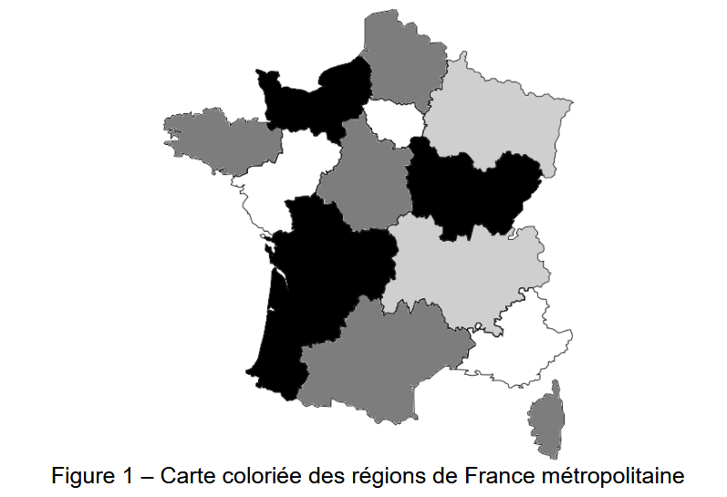

Thème 1 : Paradigmes de programmation¶
À retenir
Un paradigme de programmation est une manière de penser et d'organiser un programme.
Il définit notamment :
- la façon de représenter les données ;
- la manière de décrire les traitements ;
- la structure générale du code.
Un langage de programmation peut utiliser plusieurs paradigmes.
Par exemple, Python permet de programmer selon plusieurs paradigmes :
- programmation impérative ;
- programmation orientée objet ;
- programmation fonctionnelle.
Objectif
Dans ce chapitre, nous allons identifier les différences entre ces paradigmes de programmation et comprendre les caractéristiques de chacun.
Programmation impérative¶
À retenir
Dans le paradigme impératif, on décrit un programme comme une suite d'instructions qui sont exécutées les unes après les autres.
Le programme indique donc comment obtenir le résultat, en faisant évoluer progressivement l'état du programme.
On utilise généralement pour cela : des variables, des affectactions, des structures conditionnelles, des boucles et des fonctions.
Exemple :
On souhaite calculer les carrés des nombres d'une liste.
Le programme effectue successivement les opérations suivantes :
nombrescontient[1, 2, 3, 4, 5].carresest initialisée avec une liste vide :[].- La boucle commence avec
n = 1. - Le carré de
1est calculé :1 ** 2 = 1. 1est ajouté à carres :[1].nprend la valeur2.- Le carré de
2est calculé :2 ** 2 = 4. 4est ajouté àcarres:[1, 4].- Le processus continue avec
n = 3, puisn = 4etn = 5. - À la fin,
carrescontient[1, 4, 9, 16, 25]. - Le résultat est affiché.
L'approche impérative décrit donc les différentes étapes permettant de modifier progressivement l'état du programme.
Programmation fonctionnelle¶
📥 Support élève du thème 1 (PDF)
Principe¶
À retenir
La programmation fonctionnelle est un paradigme de programmation qui consiste à construire un programme en utilisant principalement des fonctions et des transformations de données.
Elle privilégie les transformations de données à l'aide de fonctions et cherche à limiter les modifications de l'état du programme.
Reprenons l'exemple utilisé dans la partie précédente. Avec une approche fonctionnelle, on peut utiliser map :
Exemple :
L'approche fonctionnelle ne décrit donc pas les différentes étapes de modification d'une liste. Elle décrit plutôt la transformation que l'on souhaite appliquer aux données.
Fonctions pures et effets de bord¶
Une fonction est dite pure si :
- elle donne toujours le même résultat pour les mêmes paramètres ;
- elle ne modifie pas de données extérieures à la fonction.
Exemple :
Pour une même valeur de x, elle produit toujours le même résultat. Elle ne modifie aucune variable extérieure.
Une fonction produit un effet de bord lorsqu'elle provoque une modification ou une action observable en dehors de son calcul.
Par exemple, modifier une variable extérieure :
L'appel :
ou effectuer un affichage :
Dans les deux cas, la fonction ne se contente pas de calculer et de retourner une valeur.
À retenir
En programmation fonctionnelle, on cherche autant que possible à utiliser des fonctions pures et à limiter les effets de bord.
Cela rend les fonctions plus faciles à comprendre, à tester et à réutiliser.
Les fonctions comme objets¶
En Python, une fonction peut être utilisée comme une donnée.
Elle peut notamment être :
- stockée dans une variable ;
- passée comme argument à une autre fonction.
Exemple :
On peut stocker cette fonction dans une variable :
f et carre désignent alors la même fonction.
Une fonction peut également être passée comme argument à une autre fonction.
Exemple :
On peut alors écrire :
La fonction appliquer reçoit carre comme argument et l'utilise ensuite sur 5.
À retenir
En Python, une fonction peut être manipulée comme une valeur.
Elle peut notamment être stockée dans une variable ou passée comme argument à une autre fonction.
Une fonction d'ordre supérieur est une fonction qui reçoit une fonction en argument ou qui renvoie une fonction.
Les fonctions lambda¶
Une fonction lambda permet de créer rapidement une petite fonction.
La syntaxe est la suivante :
Exemple :
équivaut à :
On peut donc écrire :
Information
Les fonctions lambda sont particulièrement utilisées avec map, filter et reduce.
À retenir
lambda permet de définir rapidement une petite fonction, généralement utilisée directement à un endroit précis.
map : transformer¶
La fonction map permet d'appliquer une fonction à chaque élément d'une collection.
Exemple :
nombres = [1, 2, 3, 4, 5]
carres = map(lambda x: x ** 2, nombres)
print(list(carres)) # [1, 4, 9, 16, 25]
On peut lire ce programme ainsi : pour chaque élément de nombres, calculer son carré.
filter : sélectionner¶
La fonction filter permet de conserver uniquement les éléments qui vérifient une condition. La fonction utilisée doit renvoyer True ou False.
Exemple :
nombres = [1, 2, 3, 4, 5, 6]
pairs = filter(lambda x: x % 2 == 0, nombres)
print(list(pairs)) # [2, 4, 6]
On peut lire ce programme ainsi : pour chaque élément, vérifier s'il est pair et conserver uniquement ceux qui le sont.
reduce : combiner¶
La fonction reduce permet de combiner les éléments d'une collection pour obtenir une seule valeur. Elle se trouve dans le module functools.
Exemple :
from functools import reduce
nombres = [1, 2, 3, 4, 5]
somme = reduce(lambda x, y: x + y, nombres)
print(somme) # 15
Le calcul est effectué progressivement :
Combiner filter, map et reduce¶
Les trois fonctions peuvent être utilisées successivement.
On dispose de :
On souhaite :
- conserver les nombres pairs ;
- calculer leur carré ;
- calculer leur somme.
from functools import reduce
nombres = [1, 2, 3, 4, 5, 6]
pairs = filter(lambda x: x % 2 == 0, nombres)
carres = map(lambda x: x ** 2, pairs)
somme = reduce(lambda x, y: x + y, carres)
print(somme) # 56
À retenir
Une approche fonctionnelle permet d'enchaîner des transformations pour obtenir progressivement le résultat souhaité.
Activité 1 - Programmation fonctionnelle¶
À ne pas oublier
Pensez à répondre aux questions sur la feuille distribuée en classe.
On dispose d'un dictionnaire contenant les résultats d'une classe :
notes = {
"Alice": 15,
"Baptiste": 8,
"Chloé": 12,
"David": 17,
"Emma": 6,
"Farid": 14,
"Gabriel": 19,
"Hugo": 10,
"Inès": 13,
"Jules": 7
}
L'objectif est d'analyser ces résultats en utilisant les principes de la programmation fonctionnelle.
On cherchera notamment à utiliser les fonctions map, filter et reduce.
Question 1
On souhaite sélectionner uniquement les élèves ayant obtenu au moins 10.
Écrire une fonction est_admis qui reçoit un couple (nom, note) et renvoie :
Truesi la note est supérieure ou égale à 10 ;Falsesinon.
Par exemple :
Utiliser ensuitefilter pour sélectionner les élèves admis.
Coup de pouce
filter reçoit une fonction et un itérable.
Il conserve les éléments pour lesquels la fonction renvoie True.
On pourra utiliser list() pour obtenir et afficher les éléments de l'objet filter.
Attention : les itérateurs sont épuisables
filter et map renvoient des itérateurs.
Un itérateur fournit ses éléments une seule fois. Lorsqu'on parcourt tous ses éléments, on dit qu'il est épuisé.
Par exemple :
Le premier print affiche les éléments filtrés, mais le second affiche une liste vide :
En effet, les éléments ont déjà été parcourus par le premier list().
Attention donc à ne pas afficher un itérateur avant de vouloir le réutiliser.
Question 2
On souhaite maintenant récupérer uniquement les noms des élèves admis.
Écrire une fonction recuperer_nom qui reçoit un couple (nom, note) et renvoie le nom de l'élève.
Par exemple :
Utiliser ensuite map pour appliquer cette fonction aux élèves admis. On souhaite obtenir :
Coup de pouce
map reçoit une fonction et un itérable.
Il applique la fonction à chacun des éléments de l'itérable.
Comme pour filter, on pourra utiliser list() pour obtenir les éléments de l'objet map.
Question 3
On souhaite maintenant récupérer uniquement les notes des élèves admis.
Écrire une fonction recuperer_note qui reçoit un couple (nom, note) et renvoie la note.
Par exemple :
Utiliser map pour obtenir la liste des notes des élèves admis. Résultat attendu :
Question 4
On souhaite maintenant calculer la somme des notes des élèves admis.
Importer la fonction reduce :
Écrire une fonction additionner qui reçoit deux nombres x et y et renvoie leur somme.
Utiliser reduce pour calculer la somme des notes obtenues à la question précédente.
Résultat attendu :
Coup de pouce
reduce reçoit une fonction et un itérable.
Il applique progressivement la fonction aux éléments de l'itérable afin d'obtenir une seule valeur.
Question 5
On souhaite maintenant calculer la moyenne des élèves admis.
Utiliser :
filterpour sélectionner les élèves admis ;mappour récupérer leurs notes ;reducepour calculer leur somme ;lenpour connaître leur nombre.
Le programme doit afficher :
Programmation Orientée Objet (POO)¶
📥 Support élève du thème 1 (PDF)
Introduction à la POO (Activité débranchée 1)¶
À ne pas oublier
Pensez à répondre aux questions sur la feuille distribuée en classe.
Principe¶
À retenir
La programmation orientée objet (POO) est un paradigme de programmation qui consiste à organiser un programme autour d'objets.
Un objet regroupe :
- des données, appelées attributs ;
- des fonctions, appelées méthodes.
Prenons l'exemple d'une voiture, celle-ci possède des caractéristiques, comme un nombre de portes, une couleur, une marque, une vitesse maximale, etc. Cela va donc correspondre aux attributs de la classe Voiture. Cette voiture est également capable de se déplacer, de freiner (il vaut mieux), de tourner, etc. Ces actions possibles constituent les méthodes de la classe Voiture.
Une classe va donc correspondre à un modèle, une sorte de moule, dont tous les objets qui seront créés avec ce dernier partageront les mêmes attributs et méthodes. Ces objets seront donc du type class en python. Chaque objet créé correspond à une instance d'une classe, on utilise par exemple le moule qui correspond à une voiture, puis il ne reste qu'à définir la valeur de ses attributs (ex : Rouge pour la couleur).
Application¶
Exercice 1 - C'est la classe¶
Soit le programme suivant :
class Ennemi:
def __init__(self):
self.point_de_vie = 20
self.difficulte_ia = "Facile"
def est_vaincu(self):
return self.point_de_vie <= 0
def degats_subis(self, degat):
self.point_de_vie -= degat
def mise_a_jour_ia(self):
if self.point_de_vie < 5:
self.difficulte_ia = "Difficile"
elif self.point_de_vie < 13:
self.difficulte_ia = "Moyenne"
mechant = Ennemi()
degat = 1
while not mechant.est_vaincu():
mechant.degats_subis(degat)
mechant.mise_a_jour_ia()
degat += 1
À ne pas oublier
Pensez à répondre aux questions sur la feuille distribuée en classe.
Question 1
Identifier le type de la variable mechant.
Question 2
Lister les attributs et méthodes de la classe Ennemi.
Question 3
Quelles sont les valeurs des attributs de l'objet mechantà sa création ?
Question 4
Noter à chaque tour de la boucle, les valeurs des attributs de mechant.
Activité 2 - Classe-ment¶
Question 1
Implémenter la classe Ennemi donnée précédemment. Puis ajouter lui un nouvel attribut nommé arme. Cet attribut correspond à un tuple (nom de l'arme, dégât de l'arme).
Question 2
Ajouter une méthode prendre_arme qui met à jour l'arme de l'Ennemi. Cette méthode prend en paramètres un nom d'arme et des dégâts.
Question 3
Ajouter ensuite une méthode permettant à la classe Ennemi de tirer nommée faire_degat et qui renvoie les dégâts de l'arme.
Question 4
Créer deux instances de la classe Ennemi. Puis effectuer un tirage aléatoire de valeurs, si la valeur est paire alors c'est le premier ennemi qui tire, réduisant la vie du second. Si la valeur est impaire c'est l'inverse. Réaliser des tirages aléatoires de valeurs jusqu'à la mort d'un des Ennemis et afficher le nombre de points de vie restant du vainqueur.
Correction
Activité 3 - Bot-aille¶
À ne pas oublier
Pensez à répondre aux questions sur la feuille distribuée en classe.
On récupère la classe JeuDeCartes suivante, les attributs ont été complétés, mais les méthodes non.
class JeuDeCartes:
def __init__(self):
"""Construit un jeu de 52 cartes."""
self.cartes = []
self.valeurs = [
2, 3, 4, 5, 6, 7, 8, 9, 10,
"valet", "dame", "roi", "as"
]
self.couleurs = [
"Pique", "Trèfle", "Carreau", "Coeur"
]
# Création des 52 cartes
# À compléter (Question 1)
def nomCarte(self, c):
"""Renvoie le nom d'une carte."""
# À compléter (Question 2)
def battre(self):
"""Mélange les cartes."""
# À compléter (Question 3)
def tirer(self):
"""Retire et renvoie une carte."""
# À compléter (Question 4)
# À compléter (Questions 5 et 6 )
On souhaite simuler le jeu de la bataille, utilisant 52 cartes. On sépare les cartes par ce qu'on appelle les couleurs (Trèfle, Carreau, Pique, Coeur). Chaque carte possède également une valeur (2, 3, 4, 5, 6, 7, 8, 9, 10, Valet, Dame, Roi, As).
Question 1
Compléter la méthode init de la classe JeuDeCartes, de façon à ce que l'attribut cartes contienne toutes les cartes du jeu. Autrement dit, que la liste contienne tous les tuples (valeur, couleur) possibles afin de représenter les cartes existantes dans un jeu de 52 cartes.
Question 2
Désormais, compléter la méthode nomCarte permettant d'afficher le nom d'une carte. (Ex : As de Pique)
Question 3
Compléter la méthode battre permettant de mélanger les cartes. Pour cela, utiliser la fonction shuffle présente dans la bibliothèque random.
Question 4
Compléter la méthode tirer permettant de tirer la carte à l'indice 0 et de la supprimer de la liste de l'attribut cartes. La méthode retourne le tuple correspondant à la carte. Si toutes les cartes sont tirées, il faudra retourner None.
Question 5
Vérifier la méthode tirer en retirant toutes les cartes de la liste une par une avec une boucle for.
Question 6
Simuler un jeu de bataille entre deux bots (= joueur robot). Le joueur qui remporte le pli gagne un point.
Conseil
Vous avez le droit d'ajouter des méthodes si nécessaire, voire de modifier les attributs de la classe.
Correction
Activité 4 - Appartement non meublé¶
On souhaite modéliser un appartement composé de plusieurs pièces. Une pièce est caractérisée par un nom et une surface en m². Un appartement est caractérisé par un nom et contient une liste de pièces. Compléter les méthodes des deux classes Piece et Appartement.
class Piece:
"""Représente une pièce d'un appartement."""
def __init__(self, nom, surface):
"""Initialise une pièce avec son nom et sa surface en m².
Args:
nom (str): Nom de la pièce.
surface (float): Surface de la pièce en m².
"""
...
def getNom(self):
"""Retourne le nom de la pièce.
Returns:
str: Nom de la pièce.
"""
...
def getSurface(self):
"""Retourne la surface de la pièce.
Returns:
float: Surface de la pièce en m².
"""
...
def setSurface(self, s):
"""Modifie la surface de la pièce.
Args:
s (float): Nouvelle surface de la pièce en m².
"""
...
class Appartement:
"""Représente un appartement composé de plusieurs pièces."""
def __init__(self, nom):
"""Initialise un appartement avec une liste de pièces vide.
Args:
nom (str): Nom de l'appartement.
"""
...
def getNom(self):
"""Retourne le nom de l'appartement'.
Returns:
str: Nom de l'appartement.
"""
...
def ajouter(self, piece):
"""Ajoute une pièce à l'appartement.
Args:
piece (Piece): Pièce à ajouter à l'appartement.
"""
...
def nbPieces(self):
"""Retourne le nombre de pièces de l'appartement.
Returns:
int: Nombre de pièces.
"""
...
def getSurfaceTotale(self):
"""Calcule et retourne la surface totale de l'appartement.
Returns:
float: Surface totale de l'appartement en m².
"""
...
def getListePieces(self):
"""Retourne la liste des pièces de l'appartement.
Returns:
list: Liste des instances de Piece.
"""
...
Question 1
Compléter la méthode init de la classe Piece.
Elle doit permettre de mémoriser le nom et la surface de la pièce.
Question 2
Compléter les méthodes getNom et getSurface de la classe Piece.
Question 3
Compléter la méthode setSurface permettant de modifier la surface d'une pièce.
Question 4
Compléter la méthode init de la classe Appartement.
Un nouvel appartement doit avoir un nom et une liste de pièces vide.
Question 5
Compléter la méthode getNom de la classe Appartement.
Question 6
Compléter la méthode ajouter permettant d'ajouter une pièce à l'appartement.
Question 7
Compléter la méthode nbPieces permettant de renvoyer le nombre de pièces de l'appartement.
Question 8
Compléter la méthode getSurfaceTotale permettant de calculer la surface totale de l'appartement.
Question 9
Compléter la méthode getListePieces permettant de retourner la liste des pièces de l'appartement.
Question 10
Créer un appartement et plusieurs pièces afin de tester les différentes méthodes.
Vérifier notamment que :
- les pièces sont correctement ajoutées à l'appartement ;
- le nombre de pièces est correct ;
- la surface totale est correctement calculée ;
- la modification de la surface d'une pièce est prise en compte.
À ne pas oublier
Pensez à répondre aux questions sur la feuille distribuée en classe.
Correction
Activité 5 - Temps pis¶
Créer et compléter une classe Temps permettant de représenter une durée à l'aide de trois attributs :
h: le nombre d'heures ;m: le nombre de minutes ;s: le nombre de secondes.
La classe devra également comporter quatre méthodes :
__init__: initialise les attributs de l'objet ;add: additionne deux durées et renvoie le résultat ;sous: soustrait une durée à une autre et renvoie le résultat ;__repr__: permet d'afficher une durée sous la forme « x heures y minutes z secondes ».
Question 1
Écrire la classe Temps et compléter la méthode __init__.
Question 2
Compléter la méthode __repr__ permettant d'afficher une durée sous la forme :
Question 3
Compléter la méthode add permettant d'additionner deux durées. Par exemple :
t3 doit alors représenter une durée de 4 heures, 6 minutes et 15 secondes.
Question 4
Compléter la méthode sous permettant de soustraire une durée à une autre.
On supposera que la première durée est supérieure ou égale à la seconde.
Par exemple :
t3 doit alors représenter une durée de 2 heures, 44 minutes et 30 secondes.
À ne pas oublier
Pensez à répondre aux questions sur la feuille distribuée en classe.
Correction
Exercice 2 - Ave César¶
Dans cet exercice, on étudie une méthode de chiffrement de chaînes de caractères alphabétiques appelée code de César.
On considère que les messages à chiffrer sont composés uniquement de lettres majuscules de l'alphabet :
ABCDEFGHIJKLMNOPQRSTUVWXYZ
Le chiffrement utilise un nombre entier appelé clé de chiffrement. Cette clé détermine le décalage appliqué aux lettres du message.
Soit la classe CodeCesar définie ci-dessous:
class CodeCesar:
def __init__(self, cle):
self.cle = cle
self.alphabet = "ABCDEFGHIJKLMNOPQRSTUVWXYZ"
def decale(self, lettre):
"""Décale une lettre selon la clé de chiffrement."""
num1 = self.alphabet.find(lettre.upper())
# Si le caractère n'est pas une lettre de l'alphabet
if num1 == -1:
return lettre
# Application du décalage avec retour au début de l'alphabet
num2 = (num1 + self.cle) % 26
return self.alphabet[num2]
Coup de pouce
On rappelle que la méthode str.find(lettre) renvoie l'indice (index) de la lettre dans la chaîne de caractères str.
Question 1
Représenter le résultat d’exécution du code Python suivant :
La méthode de chiffrement du « code César » consiste à décaler les lettres du message dans l’alphabet d'un nombre de rangs fixé par la clé. Par exemple, avec la clé 3, toutes les lettres sont décalées de 3 rangs vers la droite : le A devient le D, le B devient le E, etc.
Question 2
Ajouter une méthode chiffrement(self, texte) dans la classe CodeCesar définie à la question précédente.
Cette méthode reçoit en paramètre une chaîne de caractères correspondant au message à chiffrer et retourne le message chiffré.
Elle doit utiliser la clé de chiffrement de l'instance et la méthode decale.
Exemple :
Question 3
Écrire un programme qui :
- demande de saisir la clé de chiffrement ;
- crée un objet de classe
CodeCesaravec cette clé ; - demande de saisir le texte à chiffrer ;
- affiche le texte chiffré en appelant la méthode
chiffrement.
Question 4
On ajoute la méthode transforme(texte) à la classe CodeCesar :
À ne pas oublier
Pensez à répondre aux questions sur la feuille distribuée en classe.
Correction
Activité 6 - Problème de colorisation¶
Un pays est composé de différentes régions. Deux régions sont voisines si elles ont au moins une frontière en commun. L'objectif est d'attribuer une couleur à chaque région de la carte sans que deux régions voisines aient la même couleur, en cherchant à utiliser un nombre de couleurs aussi faible que possible.
L'image ci-dessous (Figure 1) donne un exemple de résultat de colorisation des régions de la France métropolitaine.

Rappel
On rappelle quelques fonctions et méthodes des tableaux (le type list en Python) qui pourront être utilisées dans cet exercice :
len(tab): renvoie le nombre d'éléments du tableautab;tab.append(elt): ajoute l'élémentelten fin de tableautab;tab.remove(elt): enlève la première occurrence deeltdetabsieltest danstab. Provoque une erreur sinon.
Remarque
Les deux parties de cet exercice forment un ensemble. Cependant, il n’est pas nécessaire d’avoir répondu à une question pour aborder la suivante. En particulier, on pourra utiliser les méthodes des questions précédentes même quand elles n’ont pas encore été écrites.
Partie 1¶
On considère la classe Region qui modélise une région d'un pays sur une carte.
Le début de son implémentation est donné ci-dessous :
class Region:
"""Modélise une région d'un pays sur une carte."""
def __init__(self, nom_region):
"""Initialise une région.
Paramètre :
nom_region (str) : nom de la région.
"""
self.nom = nom_region
self.tab_voisines = []
self.tab_couleurs_disponibles = [
"rouge",
"vert",
"bleu",
"jaune",
"orange",
"marron"
]
self.couleur_attribuee = None
L'attribut tab_voisines contient la liste des régions voisines de la région.
L'attribut tab_couleurs_disponibles contient les couleurs qui peuvent encore être attribuées à la région.
Enfin, l'attribut couleur_attribuee contient la couleur attribuée à la région. Il vaut None lorsqu'aucune couleur ne lui a encore été attribuée.
Question 1
Donner une instruction permettant de créer une instance nommée ge de la classe Region correspondant à la région « Grand Est ».
Question 2
On souhaite ajouter à la classe Region une méthode premiere_dispo qui renvoie la première couleur disponible.
On supposera que la liste tab_couleurs_disponibles n'est pas vide.
Question 3
On souhaite ajouter à la classe Region une méthode renvoie_nb_voisines qui renvoie le nombre de régions voisines.
def renvoie_nb_voisines(self):
"""Renvoie le nombre de régions voisines.
Returns:
int : nombre de régions voisines.
"""
return ...
Compléter la méthode ci-dessus.
Question 4
On souhaite ajouter à la classe Region une méthode est_colorisee qui indique si une couleur a été attribuée à la région.
La méthode renvoie True si une couleur a été attribuée et False sinon.
Question 5
On souhaite ajouter à la classe Region une méthode retirer_couleur.
Cette méthode reçoit une couleur en paramètre et la retire de la liste des couleurs disponibles si elle s'y trouve.
Si la couleur n'est pas présente dans la liste, la méthode ne fait rien.
Compléter la méthode ci-dessus.Question 6
On souhaite ajouter à la classe Region une méthode est_voisine.
Cette méthode reçoit une région en paramètre et renvoie True si cette région est une voisine de la région courante, et False sinon.
À ne pas oublier
Pensez à répondre aux questions sur la feuille distribuée en classe.
Correction
Bientôt disponible.
Partie 2¶
Dans cette partie :
- on dispose d'un ensemble d'instances de la classe
Regionpour lesquelles l'attributtab_voisinesa été renseigné ; - on pourra utiliser les méthodes de la classe
Regionécrites dans la partie 1 :premiere_disporenvoie_nb_voisinesest_coloriseeretirer_couleurest_voisine
On considère maintenant une classe Pays qui modélise la carte d'un pays composé de plusieurs régions.
Cette classe possède un unique attribut tab_regions. Il s'agit d'une liste Python dont les éléments sont des instances de la classe Region.
Question 7
On souhaite ajouter à la classe Pays une méthode renvoie_tab_regions_non_coloriees qui renvoie la liste des régions du pays auxquelles aucune couleur n'a encore été attribuée.
Question 8
On considère la méthode suivante :
def renvoie_max(self):
"""Renvoie une région non colorisée ayant le plus de voisines."""
nb_voisines_max = -1
region_max = None
for reg in self.renvoie_tab_regions_non_coloriees():
if reg.renvoie_nb_voisines() > nb_voisines_max:
nb_voisines_max = reg.renvoie_nb_voisines()
region_max = reg
return region_max
- Expliquer dans quel cas cette méthode renvoie
None. - Dans le cas où cette méthode ne renvoie pas
None, indiquer les deux particularités de la région renvoyée par rapport aux autres régions non colorisées.
Question 9
Écrire la méthode colorie de la classe Pays qui permet de coloriser toutes les régions du pays selon l'algorithme suivant :
- récupérer la région non colorisée qui possède le plus de voisines ;
- tant que cette région existe :
- récupérer sa première couleur disponible ;
- attribuer cette couleur à la région ;
- pour chaque région voisine, retirer cette couleur de sa liste de couleurs disponibles si elle y est présente ;
- récupérer à nouveau la région non colorisée qui possède le plus de voisines.
La méthode s'arrête lorsqu'il n'y a plus de région non colorisée.
On supposera qu'il reste toujours au moins une couleur disponible pour la région à coloriser.
Compléter la méthode suivante :
À ne pas oublier
Pensez à répondre aux questions sur la feuille distribuée en classe.
Correction
Bientôt disponible.
📥 Résumé de cours du thème 1 (PDF)
Projet POO¶
Liste des sujets retenus¶
- FNAF 1 Erik, Sacha, Malean ;
- FNAF 4 Chayma, Wesley, Kacem;
- Diamant : Gabriel, Lassana, Rayan ;
- Tetris : Raphael, Kamel ;
- Jeu de la Vie ;
- Echecs Rafael, Edouard, Benjamin ;
- Morpion : Hamady, Adam
- Dames.
Consignes¶
Par groupes de 2 à 3 élèves, vous allez concevoir et programmer un jeu en Python en utilisant le paradigme de la programmation orientée objet (POO).
Le jeu devra être jouable au minimum dans une console. Les groupes qui le souhaitent pourront aller plus loin en développant une interface graphique avec la bibliothèque Pyxel.
L'objectif n'est pas seulement d'obtenir un jeu fonctionnel : vous devrez être capables de concevoir votre programme en utilisant les principes de la POO, de justifier vos choix et d'expliquer votre travail.
Organisation du travail¶
Le travail devra être réparti entre les membres du groupe, en fonction des capacités, des connaissances et des points forts de chacun.
Chaque membre doit avoir une contribution réelle et identifiable au projet.
La répartition peut par exemple concerner :
- la conception des classes et de l'architecture du programme ;
- la programmation des règles du jeu ;
- la gestion des joueurs et des interactions ;
- la gestion du plateau ou des éléments du jeu ;
- l'affichage et les interactions avec l'utilisateur ;
- l'interface graphique avec Pyxel ;
- les tests et la correction des erreurs ;
- la rédaction du rapport.
La répartition du travail devra être présentée dans le rapport écrit et pourra être questionnée lors de la soutenance.
Attention
Attention : travailler en groupe ne signifie pas que chacun programme uniquement « sa partie » sans comprendre le reste du projet. Chaque membre doit être capable d'expliquer le fonctionnement général du programme.
Contraintes de programmation¶
1. Utiliser la programmation orientée objet¶
Le projet doit obligatoirement utiliser le paradigme de la POO.
Vous devrez notamment réfléchir aux :
- classes nécessaires au fonctionnement du jeu ;
- attributs permettant de représenter l'état des objets ;
- méthodes permettant de modifier ou d'exploiter cet état ;
- relations entre les différents objets.
Le nombre de classes n'est pas imposé : il doit être adapté au jeu choisi.
La POO ne doit pas être utilisée uniquement pour respecter la consigne. Elle doit permettre de structurer réellement le programme.
Vous devrez être capables de répondre à des questions telles que :
- Quelles sont les classes de votre programme ?
- Pourquoi avez-vous créé ces classes ?
- Quels sont leurs attributs ?
- Quelles sont leurs méthodes ?
- Quels objets sont créés pendant une partie ?
- Comment les objets communiquent-ils entre eux ?
- Pourquoi avoir choisi cette organisation ?
2. Une version jouable¶
Le jeu doit être jouable au minimum en console.
La version minimale devra permettre de réaliser une partie ou une simulation complète en respectant les principales règles du jeu.
L'affichage peut rester simple : l'objectif est avant tout de travailler sur la conception et la programmation du jeu.
3. Interface graphique avec Pyxel¶
Une interface graphique avec Pyxel pourra être ajoutée au projet.
Elle n'est pas obligatoire si le temps disponible ne permet pas de la réaliser correctement.
Elle pourra notamment permettre :
- d'afficher le plateau ou la zone de jeu ;
- de représenter graphiquement les éléments du jeu ;
- de gérer les interactions avec le joueur ;
- d'afficher les scores ou les informations de partie.
Conseil
Commencez par obtenir une version console fonctionnelle avant de vous lancer dans l'interface graphique.
Tests et qualité du programme¶
Votre programme devra être testé avec différentes situations.
Vous devrez notamment rechercher :
- les erreurs de saisie ;
- les situations particulières du jeu ;
- les cas limites ;
- les situations de victoire ou de défaite ;
- les comportements inattendus.
Le programme devra être lisible, organisé et commenté lorsque cela est nécessaire.
Les noms des variables, fonctions, classes et méthodes devront être explicites.
Rapport écrit¶
Chaque groupe devra produire un rapport présentant le travail réalisé.
Le rapport devra notamment contenir :
1. Présentation du jeu¶
- Nom du jeu ;
- Règles principales ;
- Objectif du joueur.
2. Conception du programme¶
Présenter les principales classes utilisées dans le programme.
Pour chaque classe importante, indiquer :
- son rôle ;
- ses principaux attributs ;
- ses principales méthodes.
Un schéma de conception pourra être utilisé pour représenter les relations entre les différentes classes.
3. Choix de programmation¶
Expliquer quelques choix importants réalisés pendant le développement :
- organisation du programme ;
- représentation des données ;
- choix des classes ;
- gestion des interactions ;
- gestion des règles du jeu.
4. Répartition du travail¶
Indiquer précisément le travail réalisé par chaque membre du groupe.
5. Difficultés rencontrées¶
Présenter les principales difficultés rencontrées et expliquer comment elles ont été résolues.
6. Bilan¶
Présenter :
- ce qui fonctionne ;
- les fonctionnalités éventuellement non terminées ;
- les améliorations qui pourraient être ajoutées.
Soutenance orale¶
Chaque groupe présentera son projet lors d'une soutenance orale.
La présentation devra permettre de comprendre :
- le fonctionnement du jeu ;
- les choix réalisés ;
- l'organisation du programme ;
- l'utilisation de la POO ;
- la répartition du travail.
Vous devrez également effectuer une démonstration du jeu.
Chaque membre du groupe devra prendre la parole.
Des questions pourront être posées sur le programme afin de vérifier que chaque membre comprend le travail réalisé par le groupe.
Livrables¶
À la fin du projet (le 06/10), vous devrez rendre une archive comprenant :
- le(s) programme(s) Python ;
- le rapport écrit ;
- la présentation orale ;
- éventuellement, une interface graphique Pyxel.
Votre projet devra surtout montrer que vous êtes capables de concevoir un programme suffisamment complexe en utilisant la programmation orientée objet.